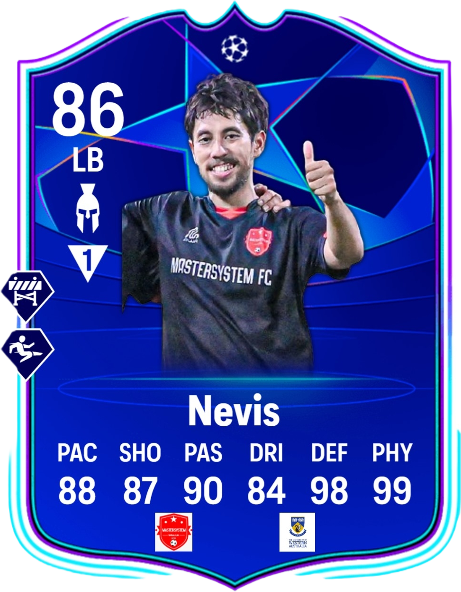
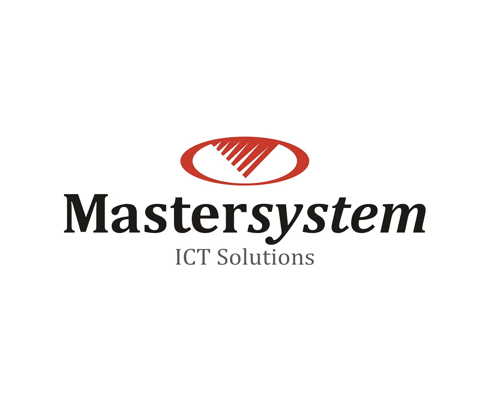
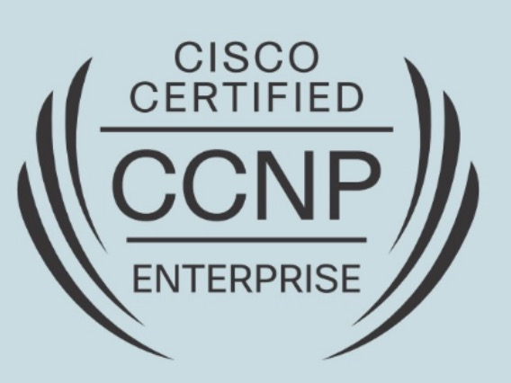
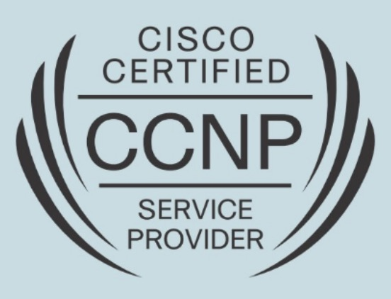
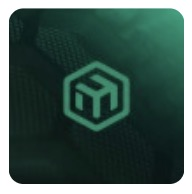

// The Myth, the Legend, the weasel
Network Engineer — Master of Information Technology Student, University of Western Australia
// About me
10+ years IT professional focusing in the Internet Service Provider industry as a network engineer delivering complex infrastructure projects across IP backbone networks, MPLS, segment routing, internet gateways, broadband infrastructure, and data centre builds. I specialised as a Cisco professional but worked across multiple platforms: Juniper, MikroTik, HP, Fortinet, and ZTE.
As the industry changed, I saw the need to evolve as well. Engineers who once spent hours manually configuring routers began writing scripts to do it in seconds. Infrastructure-as-code, DevOps pipelines, and network programmability have become job requirements.
This is what brought me to the University of Western Australia and the Master of Information Technology program. The intersection of networking and software is where the industry is heading. I am here to close the gap between what I know and what the industry needs, and to come out the other side as an engineer who can build, automate, and scale.
The network world I came from was rigid by nature. The software world runs on Agile: iterative, fast, and continuously improving. The hardest part of this transition has been learning to think differently. Networking gave me the discipline of careful planning and understanding the stakes of getting it wrong. Agile gave me the freedom to iterate, the confidence to ship imperfect work and constantly improve it.
That shift in mindset is as valuable as any certification I have ever earned. The combination of infrastructure thinking and iterative development is exactly what modern DevOps needs — and it is the engineer I am becoming.
// Education
University of Western Australia — Perth, WA
A comprehensive postgraduate program specialising in applied computing covering software development, data science, cybersecurity, and IT management.
// Experience

Mastersystem Infotama — Jakarta, Indonesia · Hybrid
Engaged with Telco users to cater the demands in tech integration and enhancements of services. Escalation point for operation, maintenance and troubleshooting on Cisco devices. Produced design documents: Site survey, POC, HLD, LLD, MOP, UAT and other deep assessment documents. Technology revolves around IP backbone, MPLS, traffic engineering, segment routing, internet gateways, broadband network, wireless controller, data center infrastructure and multicast.
MyRepublic ID — Jakarta, Indonesia · On-site
Provided and maintained data connection of client networks. Responsible for service implementation for corporate customers from survey phase, network installation supervision, network testing and developing final report. Clients network services include Leased Line, Internet and telephony through Fiber Optics Network (GPON) and Wireless Access.
CITS5505 Individual Project — UWA
Designed and built a four-page interactive web application from scratch using HTML5, CSS3, vanilla JavaScript, Bootstrap, and jQuery. Implemented AJAX data loading, localStorage persistence, and a public API integration. Managed version control via Git and GitHub throughout the project.
// Certifications

Certifies the ability to configure, troubleshoot, and manage enterprise wired and wireless networks, covering infrastructure, virtualisation, network assurance, security, and automation.

Certifies the ability to configure, troubleshoot, and manage service provider networks, covering core routing, MPLS, segment routing, traffic engineering, VPNs, and network automation.
Demonstrates foundational knowledge of optical networking technologies, including the design and operation of Ciena's optical transport and wavelength division multiplexing (WDM) platforms.
Certifies technical proficiency in deploying and operating the Tarana G1 fixed wireless access platform, a next-generation solution for delivering high-capacity broadband in non-line-of-sight environments.

Validates the ability to configure, manage, and troubleshoot MikroTik RouterOS devices, covering IP addressing, routing, firewall, NAT, wireless networking, and basic network services.
// Skills
// GitHub activity
My latest public repositories
All sources used in the preparation of this assignment, including AI assistance, are listed below in accordance with UWA referencing guidelines.